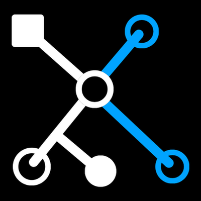

See every file, and what depends on it
Xolvyn maps your repo into a live dependency graph, so you can see how each module connects and where a change will ripple. New engineers get productive in days.
lumen-cloud / payments-api
PR Mode
Graph
Story
Full Report
@mentor
ARCHITECTURE LAYERS
Utilities7
Models12
API Layer14
Services9
Core5
subscription.controller.js
WHAT THIS DOES
Orchestrates the subscription lifecycle — create, upgrade, cancel, and the dunning logic that runs when a payment fails.
IMPORTS (4)
stripe.client.js
subscription.model.js
customer.model.js
audit.logger.js

xolvyn bot commented · just now